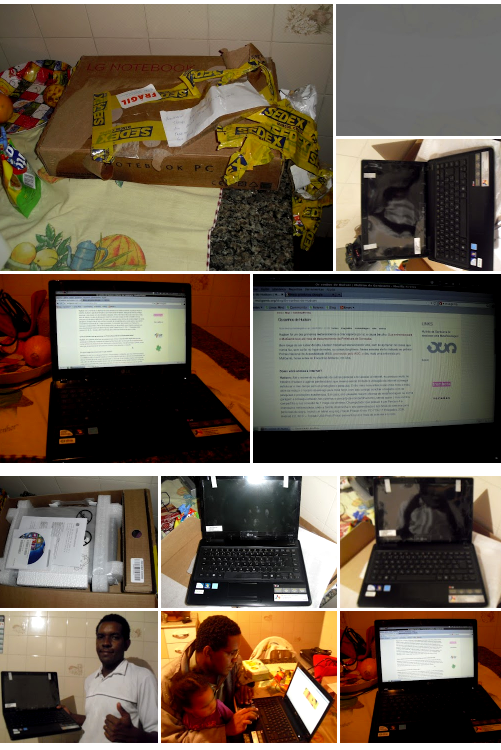

Na semana passada, em meio a correria do Encontrão em Uba, fiz essa entrevista com o Hudson. Uma de suas respostas revelou um sonho: o de ter um laptop rodando software livre. O post chegou até Thiago Rondon, que havia sido premiado com um laptop e decidiu doá-lo ao Hudson.

Bom dia galera esse e-mail é do notebook que ganhei, já subi o Linux Mint 64 bits e configurando. Parece uma história de fantasia e boba, mas assim foi o desfecho de várias ações que sucederam pela internet, desde o dia 21 de maio. Thiago Carrapatoso (para o meu espanto) sugeriu na lista Transparência Hacker que o laptop que Thiago Rondon ganhou no prêmio Mário Covas fosse doado para mim, por causa do post. Em uma semana tive meu sonho realizado, Linux instalado, família entendeu (em partes) o que eu fazia na internet, e aqui eu relatando o final deste sonho (tem muitos outros) que a colaboração e a tecnologia me permitiu realizar.